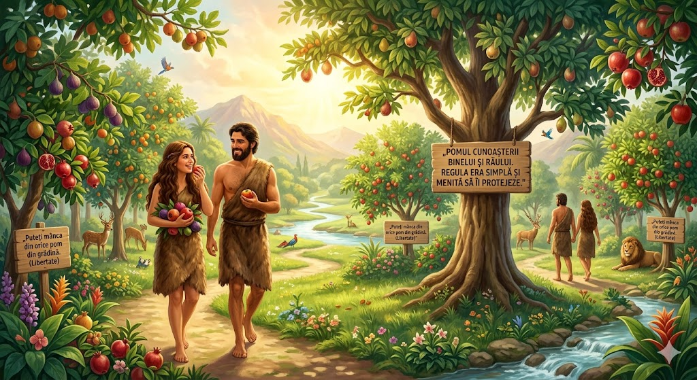
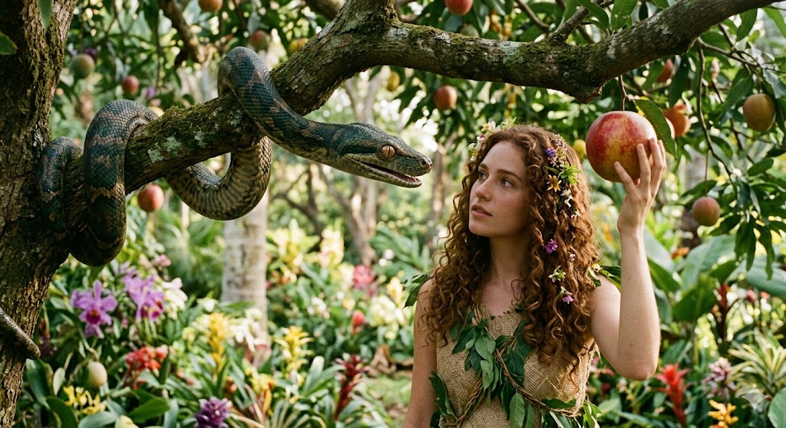

După ce a creat lumea, Dumnezeu a pregătit un loc absolut superb pentru primii oameni, Adam și Eva. Se numea Grădina Eden. Acolo nu exista tristețe, nu exista durere, iar ei se plimbau în fiecare zi alături de Creatorul lor.
1. Regula de Aur
Dumnezeu le-a dat libertate să mănânce din orice pom din grădină, cu o singură excepție: Pomul Cunoștinței Binelui și Răului. Regula era simplă și menită să îi protejeze.

2. Șoapta Șarpelui
Într-o zi, un șarpe șiret a venit la Eva și i-a pus o întrebare care i-a adus îndoială în inimă: „Oare a zis Dumnezeu cu adevărat să nu mâncați...?” Șarpele a mințit-o că fructul îi va face la fel de înțelepți ca Dumnezeu.

3. Alegerea și Consecința
În loc să aibă încredere în Dumnezeu, Eva a mâncat din fruct și i-a dat și lui Adam. În acea clipă, perfecțiunea s-a stricat. Neascultarea i-a separat de Dumnezeu și au trebuit să părăsească grădina.
„Domnul Dumnezeu a dat omului porunca aceasta: «Poţi să mănânci după plăcere din orice pom din grădină; dar din pomul cunoştinţei binelui şi răului să nu mănânci...»”
- Geneza 2:16-17
🍎 Știai că?
Cuvântul „Eden” provine din limba ebraică veche și înseamnă „plăcere” sau „deliciu”. De aceea, locul unde trăiau primii oameni era, la propriu, o „Grădină a Deliciilor”! De asemenea, Biblia nu spune nicăieri că fructul oprit era un măr; ar fi putut fi orice fel de fruct!